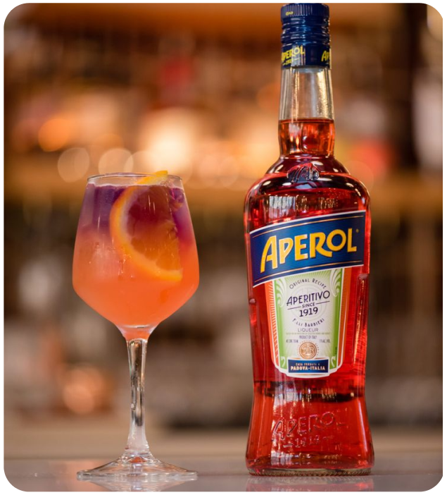

APEROL SPRITZ
O clássico italiano refrescante e amargo.

INGREDIENTES
- 150ml prosecco
- 100ml Aperol
- 50ml água com gás
- 5 cubos gelo
- 1 rodela laranja (para decorar)
MODO DE PREPARO
- Encha um copo grande (preferencialmente de vinho) com gelo.
- Adicione o Prosecco primeiro, seguido pelo Aperol.
- Complete com a água com gás.
- Misture suavemente com uma colher longa.
- Decore com uma rodela de laranja e sirva imediatamente.
CONHEÇA MAIS DRINKS
Caipirinha
NacionalO drink mais brasileiro que existe! Feito com cachaça, limão e açúcar.
Piña Colada
InternacionalUm clássico tropical com rum, creme de coco e suco de abacaxi.
Strawberry Mojito
CaribenhoHortelã, morangos frescos, rum e um toque cítrico.
Martini Clássico
EuropeuElegante e forte, feito com gin e vermute seco.